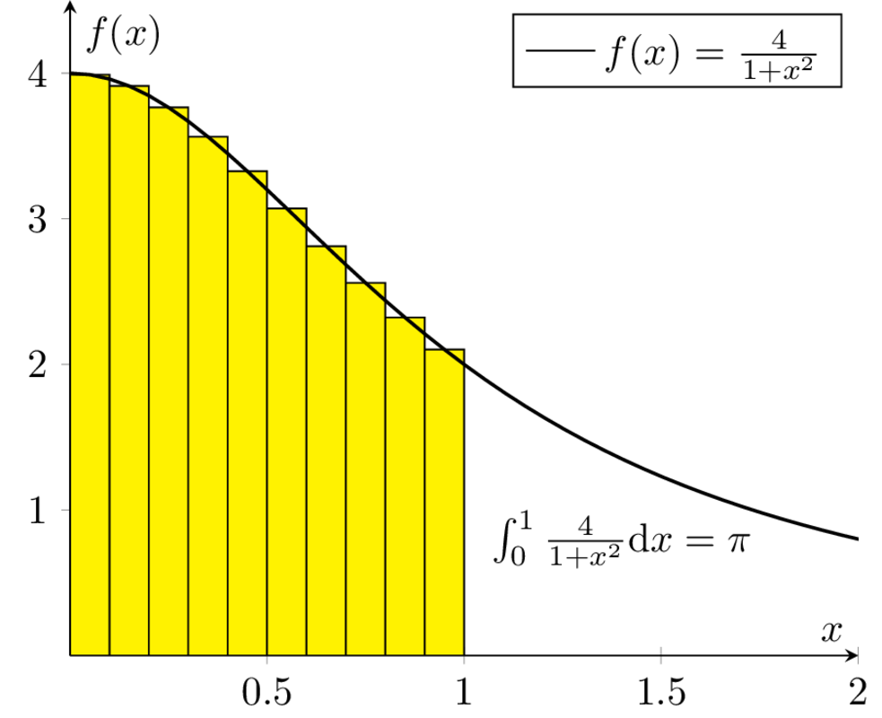

curl https://sh.rustup.rs -sSf | shRust als sichere Programmier- sprache
| Stefan Lankes | Jens Breitbart |
|---|---|
System Software @ RWTH | Here for fun and no profit |
Hinweise zum Vortrag
Beispiele: https://github.com/stlankes/heise_devsec2018
Einstieg: https://www.rust-lang.org
Playground: https://play.rust-lang.org
Tutorial: https://rustbyexample.com
Was ist Rust?
Rust ist eine (relativ) neue Programmiersprache für systemnahe Software
fn main() {
// Die Statements werden ausgeführt sobald
// das compilierte Binary gestartet wird
// Ausgabe auf stdout
println!("Hello devsec 2018!");
}Bekannt u.a. für den Einsatz in Firefox
⇒ Rust Code läuft somit auf Millionen von Rechnern
Woher kommt Rust?

Rust ist ein open-source (MIT + Apache) Projekt
Wird aktuell primär von Mozilla Research gesponsort
Die Weiterentwicklung selbst wird allerdings stark durch die Community getrieben
Vorteile von Rust
C/C++ ähnliche Performance
Compilerbasierte Überprüfungen welche z.B.
Speichersicherheit (ohne Garbage Collection) garantieren
Data Races verhindern
⇒ Falscher Code compiliert nicht
Safety vs Speed
Einfache Integration von C
#[repr(C)]
struct RustObject {
number: c_int
}
#[link(name = "libprinto")]
extern {
fn c_print_object(object: *mut RustObject) -> c_int;
}
fn main() {
let mut rust_object = /* TODO */;
unsafe { c_print_object(&mut *rust_object); }
}Safe / unsafe Rust
Die folgenden Vorteile gelten grundsätzlich nur für
safeRustIn
unsafelässt sich jeder Fehler aus C auch in Rust nachbauen
Ownership & Borrowing
std::vector<std::string>* x = nullptr;
{
std::vector<std::string> z;
z.push_back("Hello devsec 2018!");
x = &z;
}
std::cout << (*x)[0] << std::endl;Ist dieses C++-Beispiel problematisch?
Erlaubt Rust solche Referenzen?
let x;
{
let z = vec!("Hello devsec 2018!");
x = &z;
}
println!("{}", x[0]);Fragen wir den Compiler
error[E0597]: `z` does not live long enough
--> src/main.rs:9:8
|
9 | x = &z;
| ^ borrowed value does not live long enough
10 | }
| - `z` dropped here while still borrowed
...
13 | }
| - borrowed value needs to live until hereOwnership
Variablen werden an einen Besitzer (Owner) gebunden
Wird der Scope des Besitzers verlassen, wird die Variable freigeben
Yehuda Katz: Ownership is the right to destroy
Borrowing
Mit Hilfe von Referenzen kann der Besitzt ausgeliehen werden
Der Besitz geht automatisch wieder zurück, wenn die Referenz nicht mehr existiert
Sind die geschweiften Klammern nötig?
let mut x = vec!("Hello devsec 2018!");
{
let z = &mut x;
// Do something with z...
}
println!("{}", x[0]);Vorteile von Ownership & Borrowing
Keine
dangling pointerKein
pointer aliasing
⇒ Zwei typische Fehlerklassen die in C/C++ auftreten können sind in Rust nicht möglich.
Vermeidung von Pufferüberläufe
Klassisches Sicherheitsproblem
Erkennt Rust den ungültigen Zugriff?
fn main() {
let array: [i32; 5] = [1, 2, 3, 4, 5];
let x = array[6];
}Fehlermeldung des Compilers
Zur Compilezeit werden einfache Fehler erkannt
error: index out of bounds: the len is 5 but the index is 6
--> src/main.rs:6:10
|
6 | let x = array[6];
| ^^^^^^^^
|
= note: #[deny(const_err)] on by defaultWerden Laufzeitfehler abgefangen?
fn main() {
let array: [i32; 5] = [1, 2, 3, 4, 5];
for i in 0..6 {
println!("array[{}] = {}", i, array[i]);
}
}Boundary Checks zur Laufzeit
fn main() {
let array: [i32; 5] = [1, 2, 3, 4, 5];
for i in 0..6 {
println!("array[{}] = {}", i, array[i]);
}
}
thread 'main' panicked at 'index out of bounds: the len is 5 but the index is 5', src/main.rs:4:33Kein "billion dollar mistake"
Frei nach Tony Hoare (Erfinder von ALGOL)
NULLis ein Wert, der kein Wert istRust kennt
std::ptr::null, aber nur für raw, unsafe Pointer
NULL (i)
Benötigt häufig Sonderbehandlung, z.B.
char *c = 123; // Compilerfehler
std::cout << *c << std::endl;char *c = 0;
std::cout << *c << std::endl; // LaufzeitfehlerNULL (ii)
if (str == null || str.equals("")) {
}if (string.IsNullOrEmpty(str)) {
}Strings — NULL (iii)
In Rust: nicht
nullterminiert, sondern bestehen aus Start + Länge.Format Strings (z.B. für
println!) müssen compilezeit Konstanten sein.Compiler überprüft Typen.
Sum Types (a.k.a. tagged unions)
Rust benutzt
Option<T> für optionale Wertematch 128u32.checked_div(2) {
None => panic!("Unable to divide numbers"),
Some(ratio) => println!("Result {}", ratio)
};Result<T, E> für Funktionsaufrufe die Fehler liefern könnenlet mut file = match File::create("my_best_friends.txt") {
Err(e) => panic!("Unable to create file {}", e),
Ok(f) => f,
};Ein einfaches Beispiel: Pi

Pi-Berechnung in C++
Für num_steps Rechtecke die Höhen bestimmen
Höhen Aufsummieren, zum Schluß mit der Breite multiplizieren
const int num_steps = 100000000;
double sum = 0.0;
double step = 1.0 / static_cast<double>(num_steps);
for (int i = 0; i < num_steps; ++i) {
double x = (i + 0.5) * step;
sum += 4.0 / (1.0 + x * x);
}
std::cout << "Pi = " << sum * step << std::endl;Pi-Berechnung in Rust
Äquivalenter Code in Rust
const NUM_STEPS: u64 = 100000000;
let step = 1.0 / NUM_STEPS as f64;
let mut sum = 0.0;
for i in 0..NUM_STEPS {
let x = (i as f64 + 0.5) * step;
sum += 4.0 / (1.0 + x * x);
}
println!("Pi: {}", sum * step);Parallele Berechnung
Verteilung der Rechtecke über die Threads
Hier: Wettlaufsituation um die Variable sum
const double step = 1.0 / NUM_STEPS;
double sum = 0.0;
std::thread t([&](int start, int end){
for (int i = start; i < end; i++) {
double x = (i + 0.5) * step;
sum += 4.0 / (1.0 + x * x);
}
}, (NUM_STEPS / nthreads) * tid
, (NUM_STEPS / nthreads) * (tid + 1));Berechnung mit Rust
Versuch einer Wettlaufsituation in Rust
let step = 1.0 / NUM_STEPS as f64;
let mut sum = 0.0 as f64;
let threads: Vec<_> = (0..nthreads)
.map(|tid| {
thread::spawn(|| {
let start = (NUM_STEPS / nthreads) * tid;
let end = (NUM_STEPS / nthreads) * (tid+1);
for i in start..end {
let x = (i as f64 + 0.5) * step;
sum += 4.0 / (1.0 + x * x);
}
})
}).collect();
for t in threads {
t.join().unwrap();
}Compiler schlägt Alarm
Ausgeliehene Objekte könnten das Original überleben
|
37 | thread::spawn(|| {
| ^^ may outlive borrowed value `**step`
...
42 | let x = (i as f64 + 0.5) * step;
| ---- `**step` is borrowed
help: to force the closure to take ownership of `**step`
|
37 | thread::spawn(move || {
| ^^^^^^^⇒ Ein std::thread darf nur auf Variablen zugreifen die er besitzt oder welche static lifetime haben
Berechnung mit Rust
Übergabe der Ownership (Compiler Vorschlag)
let step = 1.0 / NUM_STEPS as f64;
let mut sum = 0.0 as f64;
let threads: Vec<_> = (0..nthreads)
.map(|tid| {
thread::spawn(move || {
let start = (NUM_STEPS / nthreads) * tid;
let end = (NUM_STEPS / nthreads) * (tid+1);
for i in start..end {
let x = (i as f64 + 0.5) * step;
sum += 4.0 / (1.0 + x * x);
}
})
}).collect();Compiler schlägt Alarm
Objekte werden als unveränderliche übergeben
Wettlaufsituation wird verhindert
Keine Lösung für die Pi-Berechnung
error: cannot assign to immutable captured outer variable
|
43 | sum += 4.0 / (1.0 + x * x);
| ^^^^^^^^^^^^^^^^^^^^^^^^^^Schutz statischer Elemente
Statische Element können gelesen werden
unsafe-Blöcke für Änderungen zwingend nötig
Entwickler wird sich den Gefahren bewußt
static readonly_number: u64 = 42;
static mut counter: u64 = 0;
pub fn init() {
let i = readonly_number;
unsafe {
counter = i;
}
}Zugriffsschutz mit Mutexen / RWLock
Rust-Mutexe nehmen zu schützendes Objekt auf
lock-Methode liefert Objekt zum Zugriff zurück
Automatische Freigabe nach Zerstörung des Objekts
static readonly_number: u64 = 42;
static counter: Mutex<u64> = Mutex::new(0);
pub fn init() {
let guard = counter.lock().unwrap();
guard = readonly_number;
}RWLock bietet ein ähnliches Interface.
Gemeinsame Variablen
Heap-Allokation ermöglicht längere Lebenszeit
Speicherschutz über reference counting
std::{Rc|Arc}<T>alloziertTauf dem Heapstd::Arcis thread-sicher
scoped Threads aus dem Crossbeam crate (~OpenMP Thread Model) ermöglicht teilen von Stackvariablen
⇒ Bis jetzt aber nur unveränderliche Variablen
Parallele Berechnung
let sum = Arc::new(Mutex::new(0.0 as f64));
let threads: Vec<_> = (0..nthreads).map(|tid| {
let sum = sum.clone();
thread::spawn(move || {
let start = (NUM_STEPS / nthreads) * tid;
let end = (NUM_STEPS / nthreads) * (tid+1);
for i in start..end {
let x = (i as f64 + 0.5) * step;
*sum.lock().unwrap() += 4.0 / (1.0 + x * x);
}
})
}).collect();Berechnung mit Teilergebnissen
Der Mutex serialisiert die Berechnung
Idee: Teilergebnisse berechnen & zusammenführen
let step = 1.0 / NUM_STEPS as f64;
let sum = 0.0 as f64;
let threads: Vec<_> = (0..nthreads)
.map(|tid| {
thread::spawn(move || {
let mut partial_sum = 0 as f64;
for i in start..end {
let x = (i as f64 + 0.5) * step;
partial_sum += 4.0 / (1.0 + x * x);
}
partial_sum
})}).collect();Zusammenführen der Teilergebnisse
Ergebnisse der Threads stehen beim
joinzur Verfügung
for t in threads {
sum += t.join().unwrap();
}Rust Infrastruktur
Standardisiertes Framework zum Testen
#[cfg(test)]
mod ModuleName {
#[test]
fn it_works() {
assert_eq!(2 + 2, 4);
}
}Durchführen der Tests:
cargo test
Rust Infrastruktur
Dokumentation der Tests
Fuzzer sind verfügbar und können leicht integriert werden:
cargo-fuzz
honggfuzz-rs
Zusammenfassung
Ownership / Borrowing ist für einen old school Entwickler gewönnungsbedürftig
Rust verhindert einige typische Fehlerklassen, z.B. Pufferüberläufe, race conditions
Preventing exploits is a thankless job